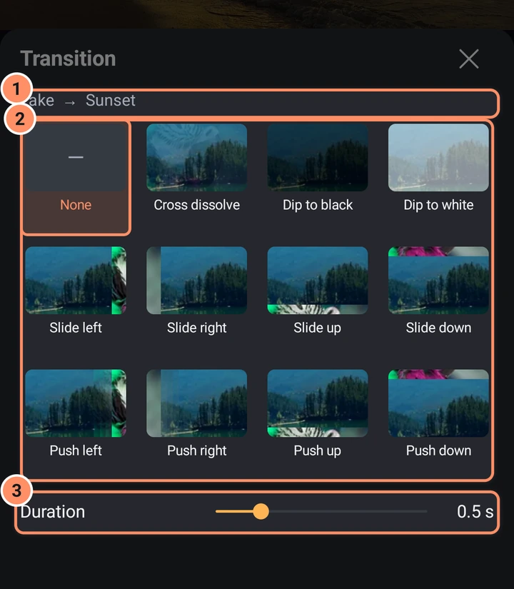
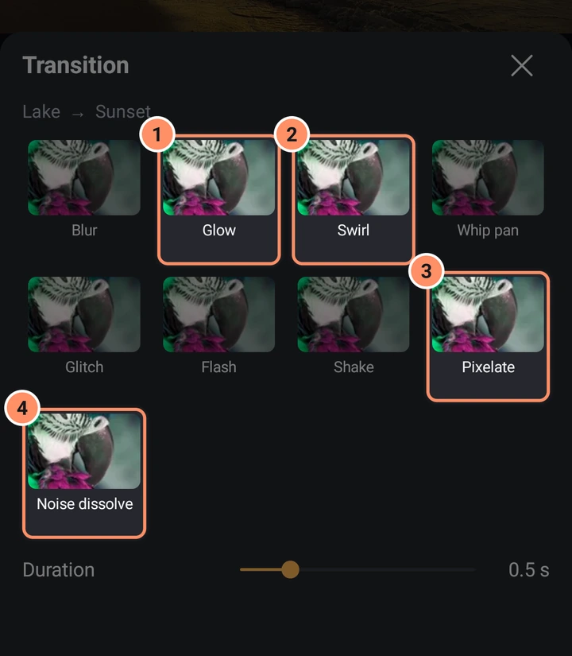

ट्रांज़िशन और एनिमेशन
क्लिप के बीच एक-टैप ट्रांज़िशन और किसी भी लेयर के लिए इन, आउट और लूप एनिमेशन।
दोनों सामान्य कीफ़्रेम और इफ़ेक्ट लिखते हैं जिन्हें आप बाद में एडिट कर सकते हैं, इसलिए आप इन्हें शुरुआती बिंदु के रूप में उपयोग कर सकते हैं।
इन, आउट और लूप एनिमेशन
- एक विज़ुअल लेयर चुनें (साउंड, कैमरा या नल ऑब्जेक्ट नहीं)।
- प्रीव्यू के नीचे दाईं ओर गोल एनिमेट करें बटन पर टैप करें। एनिमेशन शीट खुलती है।
- ऊपर इन, आउट या लूप चुनें, फिर एक टाइल। ग्रिड में कोई नहीं सबसे पहले है।
- अवधि सेट करें।


| एनिमेशन | अवधि | |
|---|---|---|
| इन और आउट | फ़ेड, बाएँ स्लाइड, दाएँ स्लाइड, ऊपर स्लाइड, नीचे स्लाइड, ज़ूम इन, ज़ूम आउट, पॉप, बाउंस, स्पिन, ब्लर | 0.1 से 2 सेकंड (डिफ़ॉल्ट 0.5) |
| लूप | पल्स, वॉबल, फ़्लोट, रोटेट | 0.2 से 4 सेकंड (डिफ़ॉल्ट 1) |
इन एनिमेशन क्लिप की शुरुआत में रखा जाता है, आउट एनिमेशन उसके अंत में, और लूप एनिमेशन पूरी क्लिप पर चलता है। अगर क्लिप के उस छोर पर पहले से कोई ट्रांज़िशन है, तो एनिमेशन चुनने पर वह बदल जाता है, और शीट यह बताती है।
दो क्लिप के बीच ट्रांज़िशन
एक ट्रांज़िशन एक क्लिप को अगली में ब्लेंड करता है। इनके लिए दो विज़ुअल क्लिप चाहिए जहाँ दूसरी पहली की तुलना में बाद में शुरू और खत्म होती है।
- दोनों क्लिप को इस तरह रखें कि वे स्पर्श करें या ओवरलैप करें। कुछ भी चयनित न होने पर, जब प्लेहेड कट पर हो, तब टाइमलाइन क्षेत्र के नीचे दाईं ओर, + बटन के ठीक ऊपर, एक गोल ट्रांज़िशन बटन दिखाई देता है। या दोनों क्लिप चुनें और नीचे की बार में दोनों क्लिप के बीच ट्रांज़िशन जोड़ें पर टैप करें।
- ट्रांज़िशन शीट "क्लिप A → क्लिप B" और ट्रांज़िशन का ग्रिड दिखाती है जिसमें कोई नहीं सबसे पहले है।
- एक चुनें और अवधि सेट करें (0.1 से 2 सेकंड, डिफ़ॉल्ट 0.5)।


उपलब्ध ट्रांज़िशन: क्रॉस डिसॉल्व, काले में डिप, सफ़ेद में डिप, बाएँ स्लाइड, दाएँ स्लाइड, ऊपर स्लाइड, नीचे स्लाइड, बाएँ पुश, दाएँ पुश, ऊपर पुश, नीचे पुश, दाएँ वाइप, बाएँ वाइप, ऊपर वाइप, नीचे वाइप, क्लॉक वाइप, ज़ूम इन, ज़ूम आउट, स्पिन, ब्लर, ग्लो, स्वर्ल, व्हिप पैन, ग्लिच, फ़्लैश, शेक, पिक्सलेट और नॉइज़ डिसॉल्व। पुश, ज़ूम इन, ज़ूम आउट और स्पिन में मोशन ब्लर होता है। ग्रिड स्क्रॉल होता है: आख़िरी ट्रांज़िशन देखने के लिए उसे ऊपर की ओर स्वाइप करें।

अगर क्लिप काफ़ी ओवरलैप नहीं करतीं, तो ऐप उन्हें खिसकाता या छोटा करता है और आपको बताता है, उदाहरण के लिए "... को पहले खिसकाया ताकि क्लिप्स ओवरलैप हों।" और "क्लिप्स में फ़िट करने के लिए 0.5 सेकंड तक छोटा किया।" साउंड, कैमरा और नल लेयर पर ट्रांज़िशन नहीं लग सकते।
ट्रांज़िशन बटन को रास्ते से हटाने के लिए उसे स्क्रीन के किनारे की ओर बगल में स्वाइप करें; प्लेहेड को हिलाने पर वह वापस आ जाता है। सेटिंग्स > एडिटर > प्रीव्यू में ट्रांज़िशन बटन उसे प्रीव्यू के नीचे बाईं ओर ले जाता है।
अपना खुद का बनाएं
एक इफ़ेक्ट, एक मूव इफ़ेक्ट या कीफ़्रेम का एक सेट ज़्यादा नियंत्रण के साथ वही काम करता है। जो लुक पसंद आए उसे प्रीसेट के रूप में सेव करके दोबारा इस्तेमाल करें: देखें एसेट, टेम्पलेट और प्रीसेट।